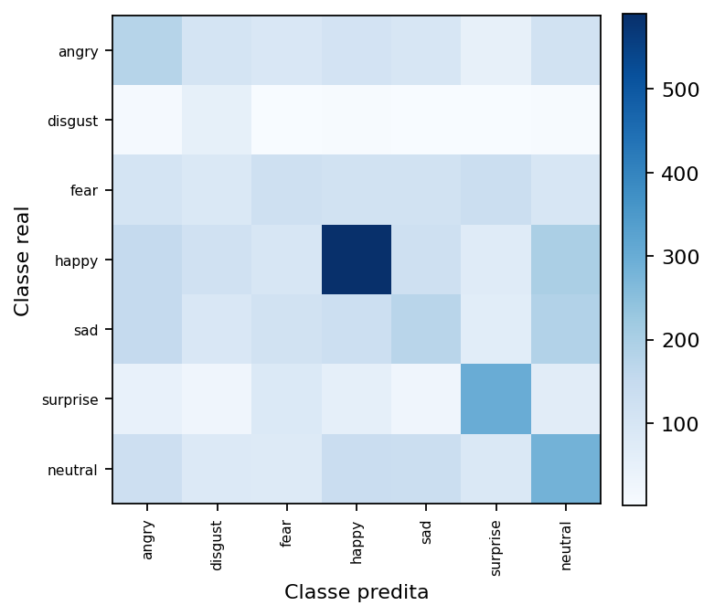
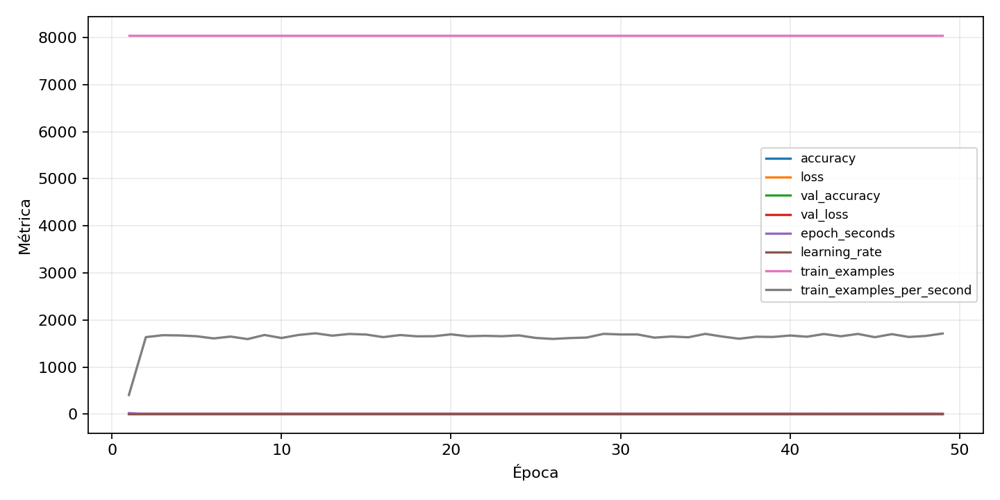

| n_samples | 5382 |
|---|---|
| loss | 1.814693570137024 |
| accuracy | 0.31512448903753254 |
| balanced_accuracy | 0.35163179666956157 |
| macro_f1 | 0.2896573834103441 |


| Índice | Classe | Suporte | Precisão | Recall | F1 |
|---|---|---|---|---|---|
| 0 | angry | 743 | 0.23137254901960785 | 0.23822341857335128 | 0.23474801061007958 |
| 1 | disgust | 82 | 0.09252669039145907 | 0.6341463414634146 | 0.16149068322981364 |
| 2 | fear | 768 | 0.20677966101694914 | 0.15885416666666666 | 0.1796759941089838 |
| 3 | happy | 1348 | 0.517998244073749 | 0.43768545994065283 | 0.47446722959388826 |
| 4 | sad | 911 | 0.25671641791044775 | 0.18880351262349068 | 0.21758380771663505 |
| 5 | surprise | 600 | 0.422316384180791 | 0.49833333333333335 | 0.45718654434250766 |
| 6 | neutral | 930 | 0.29957805907172996 | 0.3053763440860215 | 0.3024494142705006 |
{"adapter":"fer2013","balance_mode":"undersample","class_names":["angry","disgust","fear","happy","sad","surprise","neutral"],"dataset":"fer2013","dataset_options":{},"dataset_root":"/home/msduda/datasets-tcc/fer2013","native_channels":1,"normalization":"zscore","num_classes":7,"protocol":{"checkpoint_monitor":"val_macro_f1","dtype_policy":"mixed_float16","early_stopping":{"patience":10,"restore_best_weights":true},"evaluation_augmentation":false,"input_channels":"native","optimizer":"Adam","pretrained_weights":false,"reduce_lr_on_plateau":{"factor":0.3,"min_lr":1e-07,"patience":4},"resize":"proportional_padding","test_time_augmentation":false,"training_from_scratch":true},"seed":42,"source_fingerprint":"3c69743206ae28880b6ca82a3a19b8d6c0ca0b7296b7ecc703aa8a76e40db6e0","source_manifest":{"class_names":["angry","disgust","fear","happy","sad","surprise","neutral"],"joined_samples":35887,"metadata":{"file":"/home/msduda/datasets-tcc/fer2013/fer2013.csv","layout":"fer2013-csv"},"name":"fer2013","native_channels":1,"source_path":"/home/msduda/datasets-tcc/fer2013","splits":{"test":3589,"train":28709,"validation":3589},"target_size":64},"target_size":64,"test_fraction":0.15,"train_fraction":0.7,"training":{"augmentation":{"brightness_delta":0.03,"contrast_lower":0.92,"contrast_upper":1.08,"cutout_max_frac":0.08,"cutout_prob":0.25,"flip_lr":true,"noise_std":0.005,"translate_frac":0.05,"zoom_max":1.04,"zoom_min":0.96},"batch_size":512,"default_image_size":64,"dtype_policy":"mixed_float16","early_stopping_patience":10,"extra_fraction":2.0,"image_size_overrides":{"gtsrb":128},"keras_verbose":1,"learning_rate":0.0003,"max_epochs":100,"preprocess_cache_max_mib":2048,"reduce_lr_factor":0.3,"reduce_lr_min_lr":1e-07,"reduce_lr_patience":4,"shuffle_buffer_max_mib":1024},"validation_fraction":0.15}
{"epochs_completed":49,"epochs_recorded":49,"evaluation_seconds":7.10919812299835,"fit_seconds_current_attempt":337.5410635829903,"max_epoch_seconds":19.802089981007157,"max_epochs":100,"mean_epoch_seconds":5.1558972186535446,"mean_train_examples_per_second":1633.1560283631368,"median_train_examples_per_second":1654.4208511440033,"min_epoch_seconds":4.684473560992046,"selected_checkpoint":"/mnt/e/tcc-benchmark/outputs/remaining-ram-capped/fer2013/runs/fer2013__zscore__undersample__seed-42/checkpoints/best.keras","total_seconds":252.6389637140237,"training_seconds":252.6389637140237,"wall_seconds_current_attempt":366.5687013239949}
{"elapsed_seconds":366.6142182939948,"event_counts":{"data_preparation_end":1,"data_preparation_start":1,"epoch_end":49,"evaluation_end":1,"evaluation_start":1,"fit_end":1,"fit_start":1,"periodic":72,"run_completed":1,"train_start":1},"generated_at":"2026-08-02T10:45:14.062+00:00","gpu_backend":"pynvml","interval_seconds":5.0,"metrics":{"cpu_percent":{"count":129,"max":14.8,"mean":8.14263565891473,"min":0.0,"p50":8.0,"p95":11.419999999999996},"disk_data_free_bytes":{"count":129,"max":998258868224.0,"mean":998258868033.4884,"min":998258860032.0,"p50":998258868224.0,"p95":998258868224.0},"disk_data_percent":{"count":129,"max":2.7,"mean":2.7,"min":2.7,"p50":2.7,"p95":2.7},"disk_data_total_bytes":{"count":129,"max":1081101176832.0,"mean":1081101176832.0,"min":1081101176832.0,"p50":1081101176832.0,"p95":1081101176832.0},"disk_data_used_bytes":{"count":129,"max":27849961472.0,"mean":27849953470.511627,"min":27849953280.0,"p50":27849953280.0,"p95":27849953280.0},"disk_output_free_bytes":{"count":129,"max":248499892224.0,"mean":248488295717.7054,"min":248486998016.0,"p50":248487116800.0,"p95":248499872563.2},"disk_output_percent":{"count":129,"max":75.2,"mean":75.2,"min":75.2,"p50":75.2,"p95":75.2},"disk_output_total_bytes":{"count":129,"max":1000186310656.0,"mean":1000186310656.0,"min":1000186310656.0,"p50":1000186310656.0,"p95":1000186310656.0},"disk_output_used_bytes":{"count":129,"max":751699312640.0,"mean":751698014938.2946,"min":751686418432.0,"p50":751699193856.0,"p95":751699259392.0},"elapsed_seconds":{"count":129,"max":366.566842,"mean":191.32223187596898,"min":0.024265,"p50":192.235513,"p95":356.82054639999996},"gpu_count":{"count":129,"max":1.0,"mean":1.0,"min":1.0,"p50":1.0,"p95":1.0},"gpu_memory_percent":{"count":129,"max":54.09598350524902,"mean":54.00965306185937,"min":53.9121150970459,"p50":54.02731895446777,"p95":54.0921688079834},"gpu_memory_total_bytes":{"count":129,"max":8589934592.0,"mean":8589934592.0,"min":8589934592.0,"p50":8589934592.0,"p95":8589934592.0},"gpu_memory_used_bytes":{"count":129,"max":4646809600.0,"mean":4639393871.379845,"min":4631015424.0,"p50":4640911360.0,"p95":4646481920.0},"gpu_temperature_c":{"count":129,"max":56.0,"mean":51.63565891472868,"min":44.0,"p50":52.0,"p95":55.0},"gpu_utilization_percent":{"count":129,"max":62.0,"mean":20.612403100775193,"min":4.0,"p50":15.0,"p95":45.0},"process_cpu_percent":{"count":129,"max":178.2,"mean":94.74108527131783,"min":0.0,"p50":96.9,"p95":134.23999999999998},"process_read_bytes":{"count":129,"max":317497344.0,"mean":317495121.3643411,"min":317468672.0,"p50":317497344.0,"p95":317497344.0},"process_rss_bytes":{"count":129,"max":3003523072.0,"mean":2865031787.162791,"min":2653753344.0,"p50":2855886848.0,"p95":2937126912.0},"process_vms_bytes":{"count":129,"max":47598997504.0,"mean":47490285822.0155,"min":47170002944.0,"p50":47514865664.0,"p95":47598792704.0},"process_write_bytes":{"count":129,"max":1241088.0,"mean":1241088.0,"min":1241088.0,"p50":1241088.0,"p95":1241088.0},"ram_available_bytes":{"count":129,"max":13979017216.0,"mean":13775506566.945736,"min":13643681792.0,"p50":13780754432.0,"p95":13907270860.8},"ram_percent":{"count":129,"max":17.9,"mean":17.108527131782946,"min":15.9,"p50":17.1,"p95":17.5},"ram_total_bytes":{"count":129,"max":16619089920.0,"mean":16619089920.0,"min":16619089920.0,"p50":16619089920.0,"p95":16619089920.0},"ram_used_bytes":{"count":129,"max":2975408128.0,"mean":2843583353.0542636,"min":2640072704.0,"p50":2838335488.0,"p95":2906378240.0}},"sample_count":129,"schema_version":1}